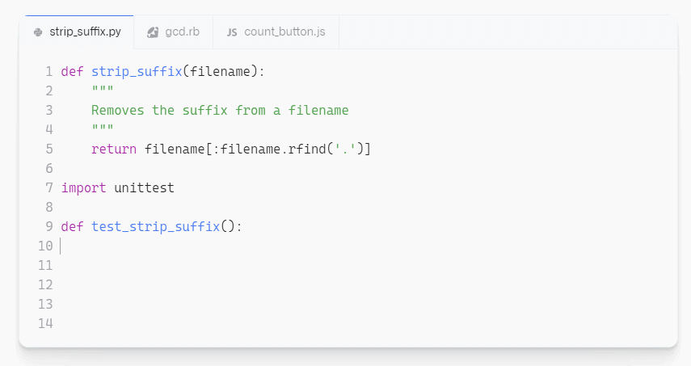

AI 编程辅助工具 Copilot 上线：微软、OpenAI、GitHub 三家联合打造。这样下去，程序员不会要失业吧。
首发：机器之心（id：almosthuman2014）

今日，GitHub 和 OpenAI 联合发布了新的 AI 代码补全工具 GitHub Copilot，并展示了技术预览版。该工具可以在 VS Code 编辑器中自动完成代码片段，这也是 OpenAI 接受微软 10 亿美元投资以来的首个重大成果。
目前，GitHub Copilot 项目还只是严格的技术预览版，用户可以在主页注册报名，将有机会访问试用。
GitHub Copilot 注册地址：https://github.com/features/copilot/signup
对于 GitHub 和 OpenAI 推出的这款全新 AI 代码补全工具，网友们给出了极高的评价。下面这位用户大致可以代表大多数试用者的心声。
MSFTResearch 高级研究员 Alex Polozov 更是表示：不夸张的讲，Copilot 将成为本世纪 20 年代排名前三的技术进展！
甚至有网友表示：这是要终结编程？
不过，虽然使用者对 Copilot 提供的生产力提升赞不绝口，GitHub 也表示：并不是所有使用的代码都经过了漏洞、不安全实践或个人数据的审查。因此，他们也设置了一些过滤器来防止 Copilot 生成攻击性的语言，并可能效果并不完美，需要后续完善。
Copilot 背后的技术
OpenAI Codex 在人们如何使用代码方面拥有广泛的知识，并且在代码生成领域显著优于 GPT-3 了，部分原因在于该系统是在包含大量公开源代码的数据集上训练的。更具体地，Codex 的训练集中包含了提取自 GitHub 的 TB（terabyte）级公开可用代码以及英语语言示例。
由于是在公开可用源代码和自然语言上训练，Codex 可以同时理解编程语言和人类语言。因此，在整个实现过程中，Copilot 编辑器扩展将开发者的注释和代码发送至 Copilot 服务端，然后使用 Codex 生成和建议单行代码和整个函数。
此外，据 OpenAI 的一位代表透露：OpenAI 计划今年夏季推出基于其 API 的 Codex 版本，这样开发者们就可以利用该技术创建自己的 app 了。
在具体实现中，GitHub Copilot 从编写的代码中提取上下文，并给出整行代码或整函数的建议。该工具可以帮助开发者快速发现解决问题、编写测试和搜索全新 API 的替代方法，而不需要在网上繁琐地定向搜索答案。
另外，使用 GitHub Copilot，开发者始终可以掌控一切，既可以循环查看 Copilot 给出的代码建议，选择接收或者拒绝，并能够手动地编辑这些代码。Copilot 会适应开发者所做的编辑，并适配编码风格。
GitHub Copilot 适用于多种框架和语言，但本次展示的技术预览版尤其适用于 Python、JavaScript、TypeScript、Ruby 和 Go 语言。GitHub 认为该工具是结对编程（pair programming）的重大进展，程序员在编写代码时有了一个「虚拟的帮手」，它可以捕捉到程序员的错误，加速开发过程。
那么，Copilot 效果如何？
最近，Github 针对一组在开源存储库中具有良好测试覆盖率的 Python 函数进行了基准测试，测试团队清除了函数体并要求 GitHub Copilot 填充它们。模型在第一次尝试正确率是 43% ，经过 10 次尝试后，正确率达到了 57%。之后 GitHub Copilot 还将进行多次训练和测试，准确率会进一步提升。
下面，我们就看一下 GitHub 给出的具体 demo 展示。
Copilot 的补全效果
相比于市面上一些编程辅助工具，Copilot 的上下文理解能力要强大得多。无论是在文档字符串、注释、函数名还是代码主体中，Copilot 都能根据编程者已写出的上下文生成匹配的代码。
先来看一下 Copilot 的主要功能——代码补全的效果，以 TypeScript 语言为例，给出函数名和参数，Copilot 就能自动补全代码。
除了补全函数，Copilot 还能根据注释写出代码。编程者给出一条描述代码逻辑的注释，GitHub Copilot 就能自动生成代码：
在编程过程中，有些代码的格式和内容非常相似，重复编写耗时且无聊。现在 GitHub Copilot 能够帮编程者解决这个问题，将简单重复的代码编写部分自动化：
在软件开发的过程中，除了编写代码，软件测试也是非常重要的，对一个代码项目起到支撑的作用。导入一个测试包，其余的测试代码 GitHub Copilot 就能够帮开发者完成。

在编程中，同一个函数常有多种实现方法，编程者通常会根据代码的实现效果和运行性能选择最合适的方法。编写多种实现需要花费时间和精力，现在使用 GitHub Copilot 一键就能搞定，如下图所示，点击 Next 和 Previous 就能查看多种实现方法，点击 Accept 选中其中一种。
今天 GitHub 推出的 Copilot 技术预览版本，还仅限于 Python、JavaScript、TypeScript、Ruby 和 Go 语言。此外，开发团队表示，在努力使其变得更好的同时，GitHub Copilot 补全的代码应该像其他任何代码一样经过仔细审查和测试。这些仍需要人类编程者的监督和优化，但 AI 自动编程的愿景已指日可待。
参考链接：
https://github.blog/2021-06-29-introducing-github-copilot-ai-pair-programmer/
https://news.ycombinator.com/item?id=27676266
https://www.reddit.com/r/MachineLearning/comments/oaambv/n_github_and_openai_release_copilot_an_ai_pair/
https://www.theverge.com/2021/6/29/22555777/github-openai-ai-tool-autocomplete-code

发表评论 取消回复